=1. 4142136……，π=3.1415923，e=2.718281……），那么我们预计这条路会永无止境。但是其实不是，它实际上又回到了起点！
=1. 4142136……，π=3.1415923，e=2.718281……），那么我们预计这条路会永无止境。但是其实不是，它实际上又回到了起点！我们已经讨论了烹饪和数学的几种美：
高雅
简单性
复杂性
有用性
娱乐性
（至少）还有一个：怪异
怪厨子
说到吃，人们想到过很多东西，有一些被烹煮、摆上餐桌再被吃掉。我说的不是遥远国度里那些奇怪的（但是传统的）饮食文化。我指的是被发明创造出来的菜肴，经过设计能够令人惊叹和高兴的菜肴。
巧克力脆皮培根、烟草大黄、大蒜冰激凌、香草鸡肉还有抹着咖啡的芝士汉堡。
有一个食谱需要在金枪鱼罐头盒里烧卫生纸（进行烟熏）[42]。
这些食谱经验证确实深受喜爱，也就是说用这些食谱做出的食物是美味可口的。但是除此之外，它们还会让人体会到不同寻常、不可思议。
我也有一些不同寻常的食谱。你已经听我说过红比萨和白比萨了，我想香蒜沙司比萨是绿比萨，但是现在有一个……
蓝比萨
前文说过的面包食谱中的生面团份（一条面包的）（见第15页，或者第96页）
杯蓝莓
70克带蓝纹奶酪
2汤匙糖
如果可以，最好用那种小的，低矮灌木生品种的野生蓝莓，这种蓝莓果汁较少（果汁会浸透比萨）。奶酪应该是淡味儿的，但一定要蓝纹的。
将蓝莓分布放在比萨饼皮上。将奶酪弄碎也分布在饼皮上。撒上糖。以230摄氏度的温度烤15～20分钟。
如果不是最终被评定为古怪异常，我也曾发明出一种不同寻常的绿色菜肴。它的突出特点就是有很多种绿色味道。
一种绿色开胃小吃
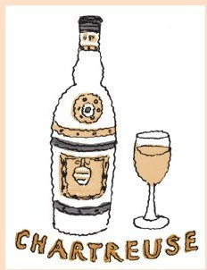
杯新鲜薄荷，散装
或者½杯新鲜罗勒，散装
或者散装的罗勒和薄荷（这个食谱的主题就是叶绿素）
1茶匙（绿色）查特酒
半个青柠的果汁
1茶匙特调水果味橄榄油
¼茶匙海盐
2茶匙粉色胡椒子（我知道这不是绿色的，但是用在这里不错）
2个牛油果，略生的。
将上述草本植物切碎，加盐和粉红胡椒子捣烂。加入液体食材。
在上桌前，将牛油果切成块，加入混合物。
吃时用小盘子或者杯子盛装。
发明了绿色和蓝色菜肴，我想继续拓展出红色、黄色和棕色菜肴（但还是要与众不同）。我现在还不知道怎么做。
奇怪的数学
我们喜欢那种所有组成部分都漂亮地组合在一起的数学。“高雅”是对一个定理或者证明的高级赞美（见第十五章）。
但是数学家也喜欢惊喜以及那些完全不同于预期的结果。对数学研究来说，“奇特”通常用来表达高兴和赞赏的心情。
数学中充满着奇特的例子。对古人来说，无理数就是著名的奇特发现。
还有一个奇特的例子是18世纪发现的：我们认为是一维的（它有长度，但是没有厚度）曲线，可以成二维扭动、起波，填满一个正方形。当然，随着时间的推移，最初奇怪的问题有一些已经被我们进一步理解、认识。我们无论何时碰到奇怪的事物，都知道我们将要学到的东西是重要的。
这是我最近碰到的一个奇特的事。你回想一下我们如何为一个在矩形中弹跳的点绘制行动路径，我们看到路径的长度同时也是矩形宽度和长度的倍数（第八章）。
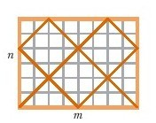
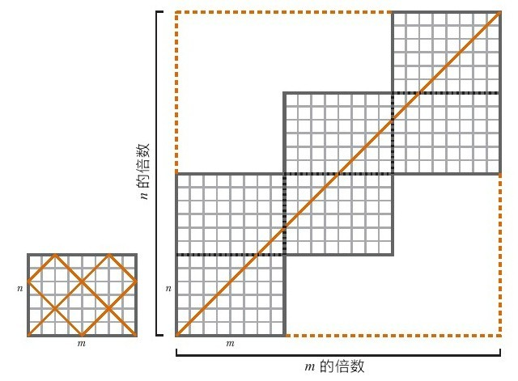
这就意味着如果我们试着将矩形的边长设定成非常数倍数，即n=6，m=70，则这个点的跳跃路径
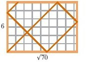
会永远持续下去。
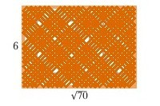
条路径会永远走下去，但是会错过很多点。填充方形的曲线不会错过任何点，也不会穿过其自身。这很奇特。
顺便说一下，这和我们所说的曲线填充正方形的意思不同。矩形中的这后来，我们观察了一些盒子，我们跟随一个环绕盒子走来走去的点，记录它的路径。
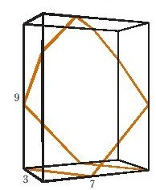
如果一条或一条以上路径的尺度为无理数，则这条路会一直走下去似乎是合理的。因此，如果我们将盒子边长设定成可想象的最疯狂的值
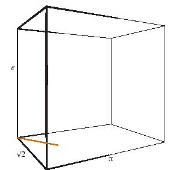
（=1. 4142136……，π=3.1415923，e=2.718281……），那么我们预计这条路会永无止境。但是其实不是，它实际上又回到了起点！
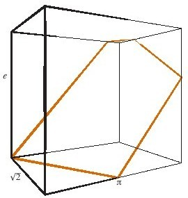
而我们可以从中学到些什么呢？
我们画出矩形的映像可以让我们更好地认识矩形，并且可以在这些映像中跟踪路径。我们做的事情几乎和在盒子里做的一样。
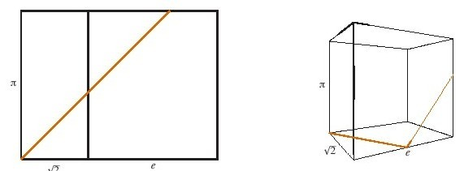
我们做的是（稍稍）将其展开。
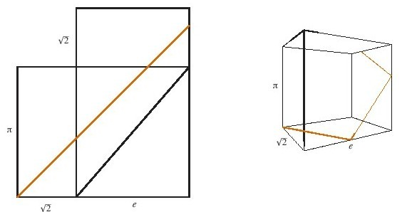
这是底，而一侧向下折：
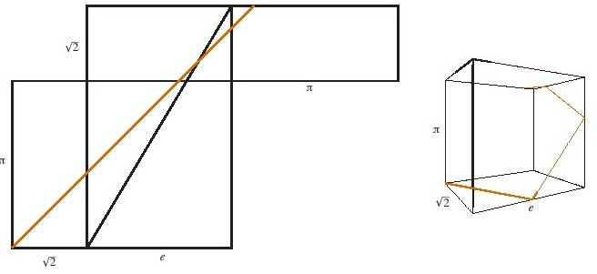
现在我们加上另一面：
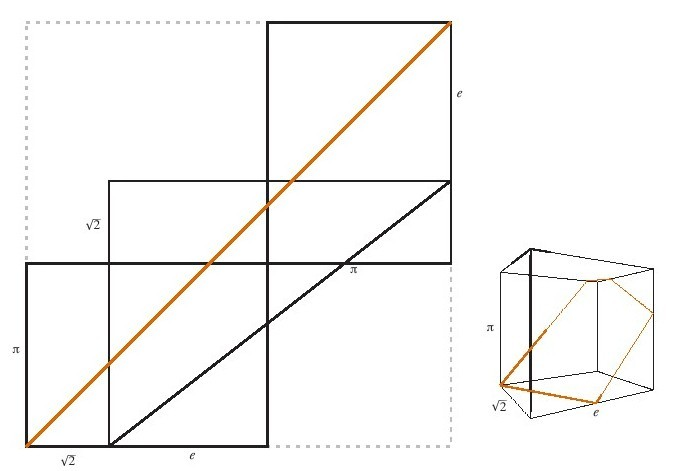
然后是顶：
接下来最后一面：
这样就都讲得通了，因为正方形内的图形的边等于2+e+π
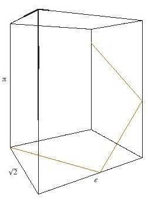
顺便说一下，如果你将盒子旋转，这样会从不同的一面开始，而行动路径会永无止境。
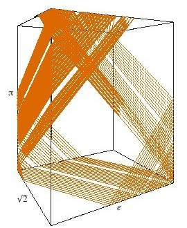
但这路径又不是无处不在，它只占据盒子的一部分，一直存在下去。
奇特！
匪夷所思又很酷。